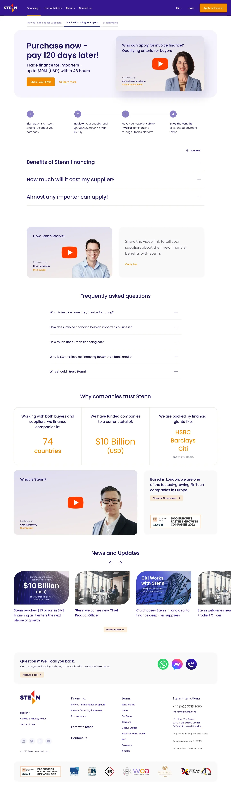
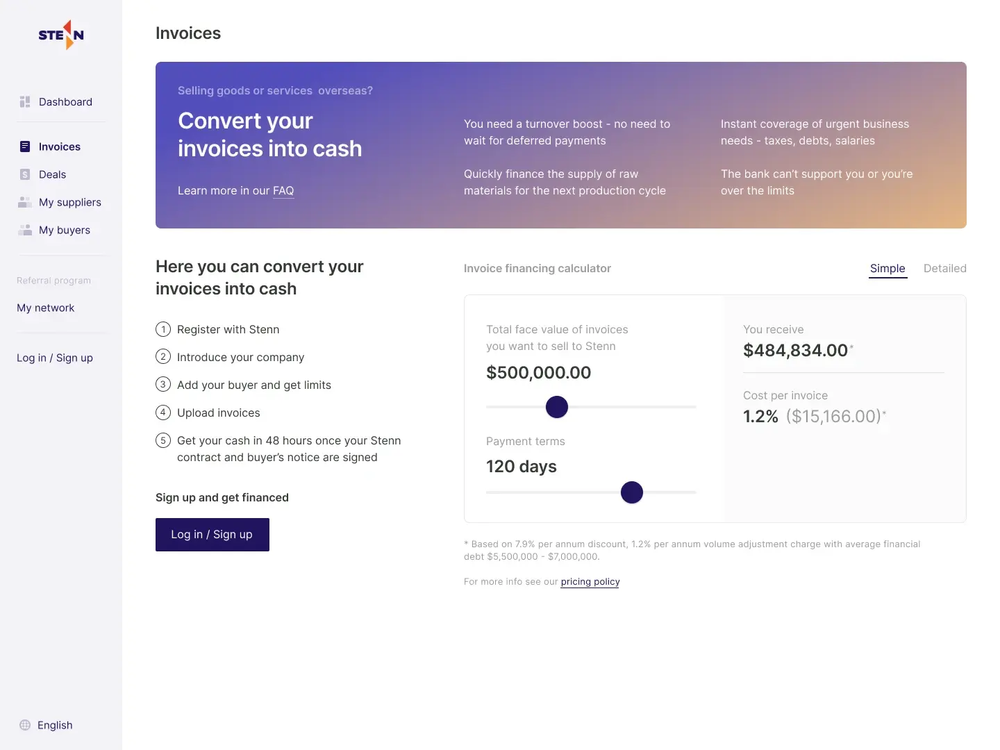
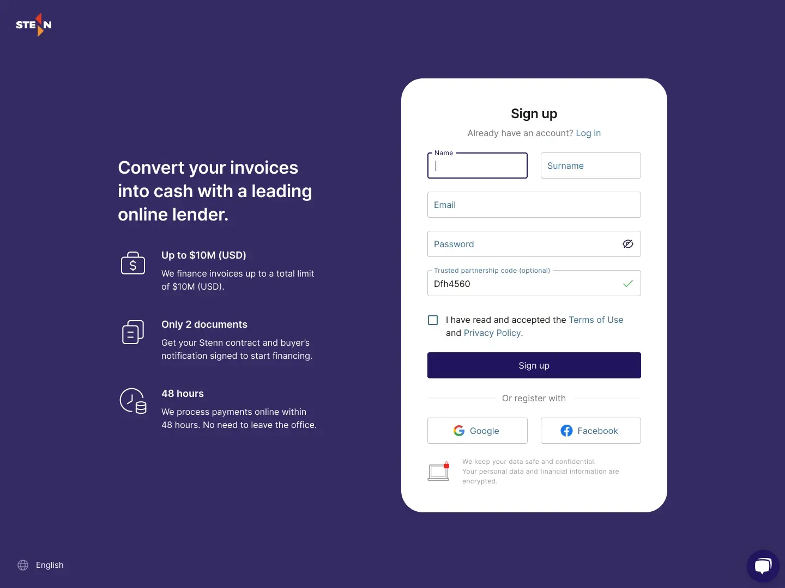
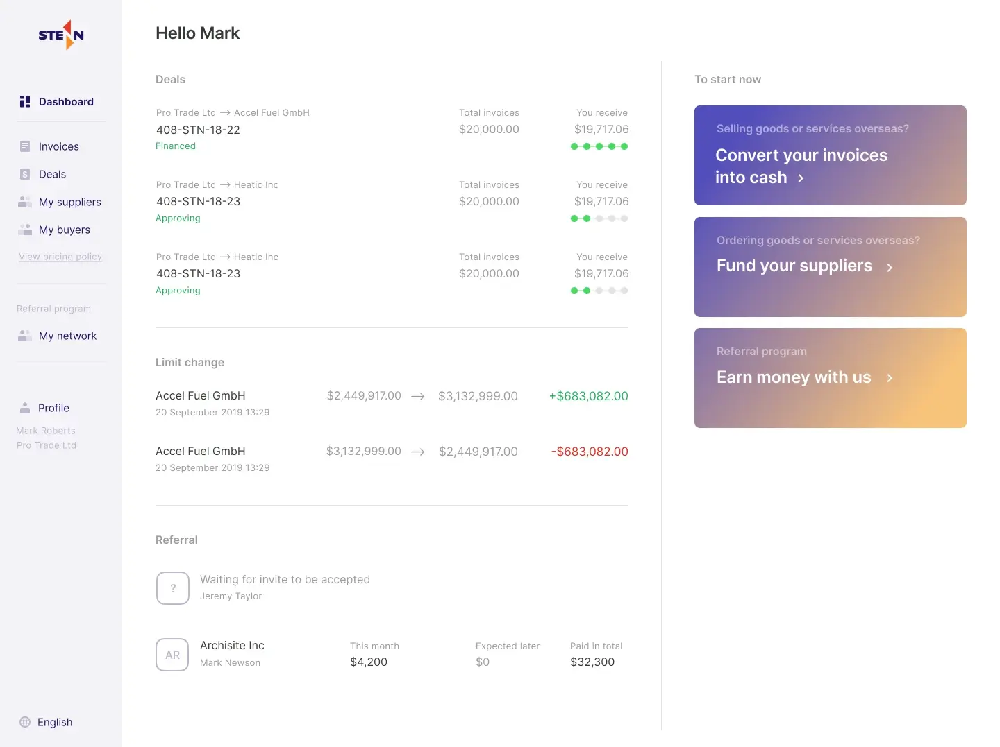
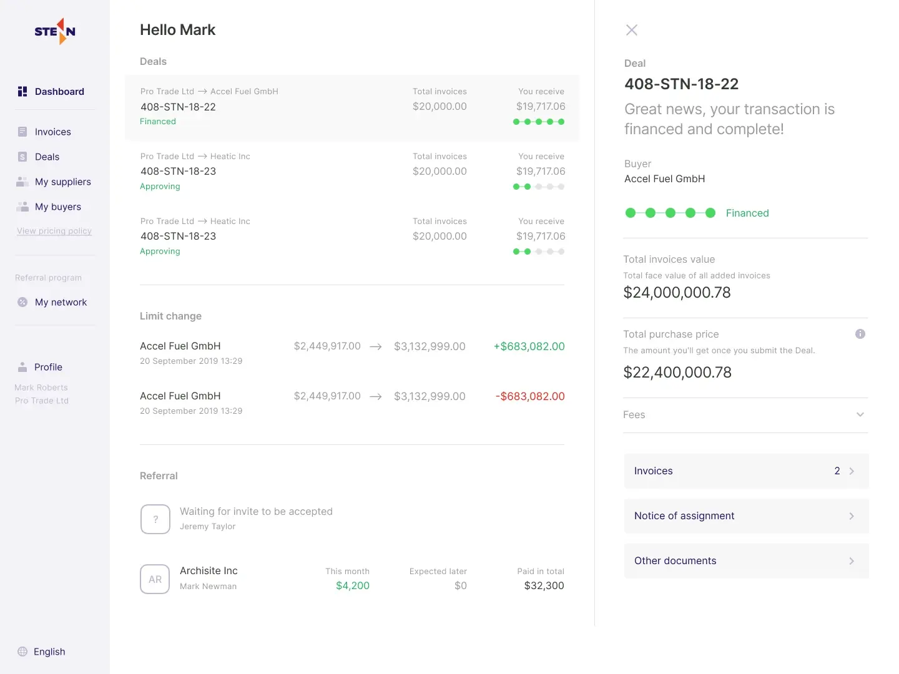
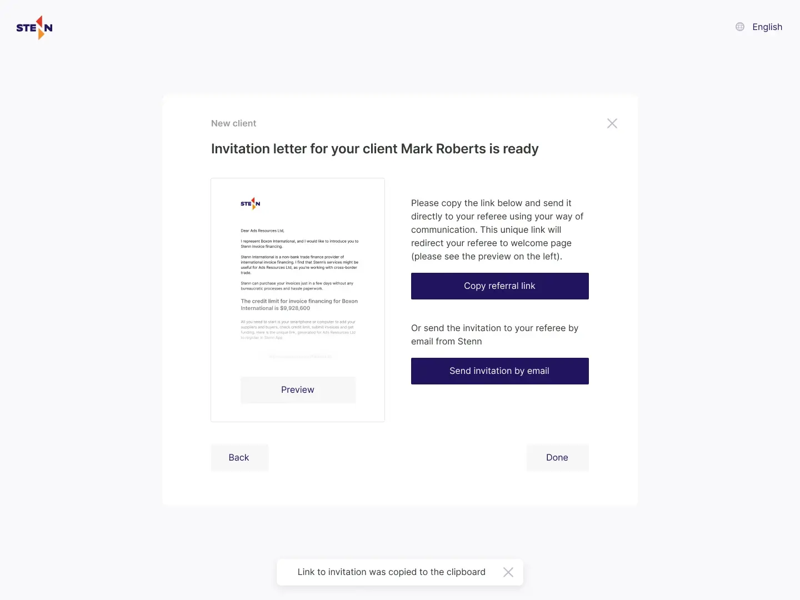
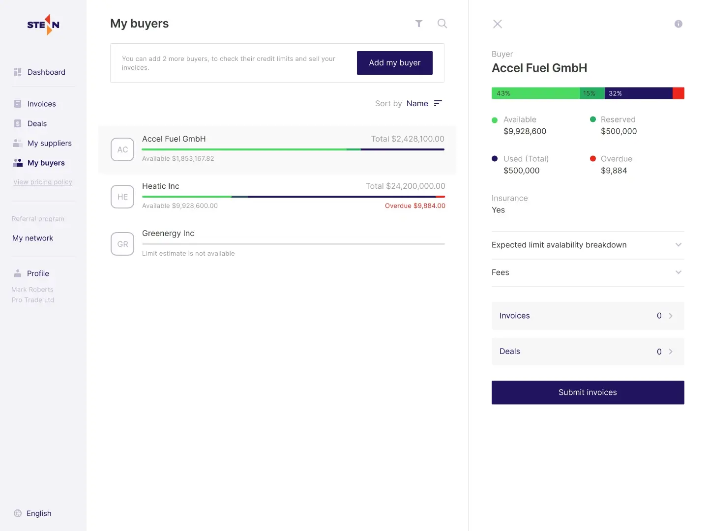

Роль: Product Designer
Discovery • UX Research • Process Mapping • UX/UI • Design System • Delivery
Stenn – международная факторинговая компания, предоставляющая оборотное финансирование экспортерам и поставщикам по всему миру. Базируется в Лондоне.
Вместе с продуктовой командой мы последовательно оптимизировали внутренние процессы компании, сокращая время выполнения операций. Это позволило масштабировать платформу без пропорционального роста операционных затрат.
Зона ответственности:







Хороший UX – это не только удобные интерфейсы для конечных пользователей. В сложных финансовых системах дизайн напрямую влияет на скорость процессов и, значит, на эффективность бизнеса.